Six separate lab services, each deployed and then locked down — a web server, a website platform, a file-sharing server, a document management system, a Windows load-balanced server pair, and Windows Server administration via PowerShell. Click any screenshot to view it full-size.
NginxWordPressSambaDockerWindows Server 2019PowerShell
Why six different services on one page? Real IT support is never just one app — it's keeping several unrelated systems running, secured, and documented at the same time, on both Linux and Windows. Jump to any section below, or scroll through all six in order.
Part A — Nginx web server
What is Nginx? It's software that sits in front of a website and handles incoming traffic — think of it as the front desk that greets every visitor before routing them to the right place. It's one of the most common web servers in the world.
Step 1
Prepared a Linux server (Rocky Linux) by installing an extra software repository needed for Nginx.
Linux keeps its software in curated collections called "repositories" — like an app store. Rocky Linux's default collection doesn't include everything needed, so an additional repository (EPEL, "Extra Packages for Enterprise Linux") has to be added first before Nginx and its related tools can be installed.
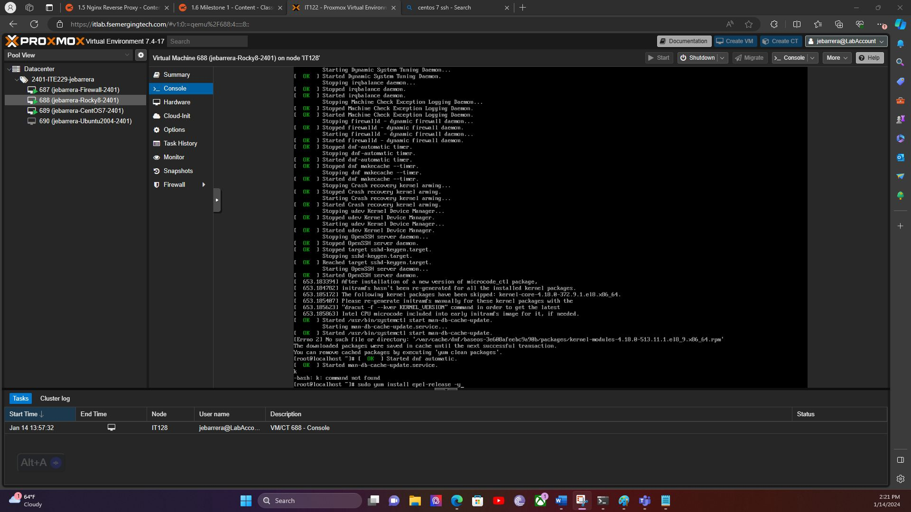
What you're looking at: a text-based command line on a freshly started Rocky Linux server. The last line shows the command being typed to install epel-release — the package that unlocks the extra software repository. Everything above it is normal startup activity from the server booting up.Step 2
Installed Nginx itself, then started it and set it to launch automatically every time the server restarts.
Installing software doesn't mean it's running — it has to be explicitly started. Setting a service to "enable" means it will start itself automatically on every future reboot, so nobody has to remember to manually turn the web server back on after a restart.
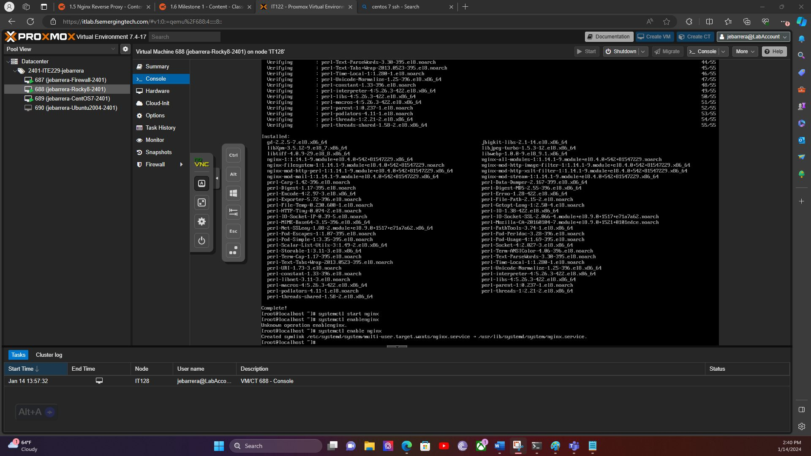
What you're looking at: the tail end of the Nginx installation, followed by the two commands that bring it to life: systemctl start nginx (turn it on right now) and systemctl enable nginx (also turn it on automatically after every reboot). The confirmation line underneath is Linux acknowledging the auto-start was set up successfully.Step 3
Configured Nginx to act as a reverse proxy — forwarding requests for one specific address to a separate backend application — then reloaded the service to apply it.
A reverse proxy is the actual point of this setup: instead of visitors talking directly to a backend app, Nginx sits in front and forwards their requests to it behind the scenes. That means the backend app never has to be exposed to the internet directly, and Nginx can add logging, SSL, or traffic rules on top of it.
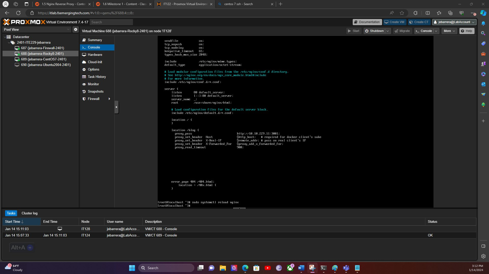
What you're looking at: the Nginx configuration file open in a text editor, with a location /blog block that uses proxy_pass to forward any request for that path to a backend application running on a different address. Below it, the terminal shows sudo systemctl reload nginx completing — applying the new routing rule without dropping the web server's active connections.
Part B — WordPress hardening
What is WordPress? It's the platform running roughly 40% of all websites — a content-management system that lets you build and edit a site without writing code from scratch. Popularity also makes it a common attack target, so hardening it matters.
Step 1
Deployed the WordPress software onto a Linux web server.
This is simply unpacking WordPress's files onto the server in the folder a web server looks in by default (/var/www/html) — the standard "front door" location for anything a website visitor is allowed to see.
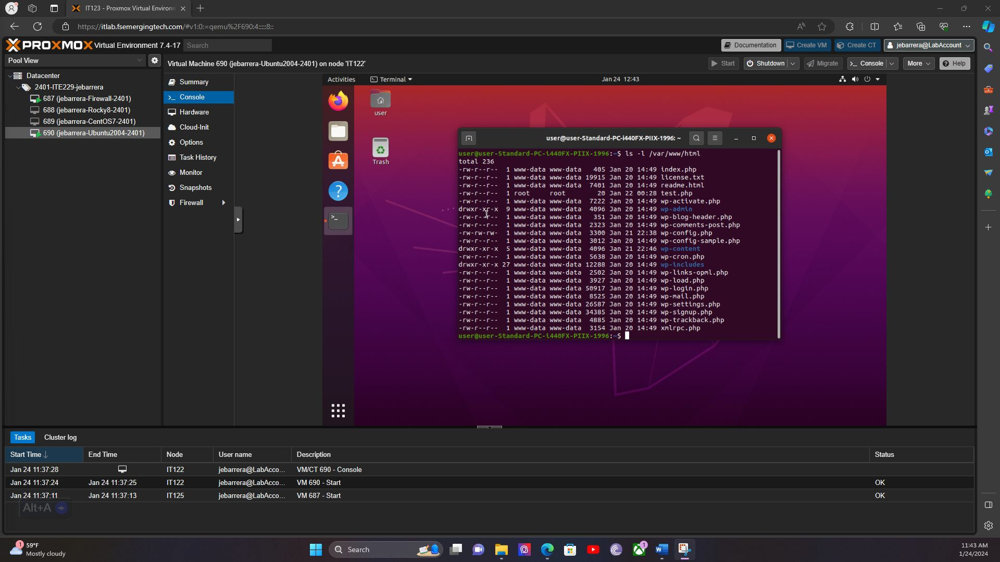
What you're looking at: a file listing showing WordPress's core files now sitting on the server — index.php, wp-login.php, wp-config.php, and others. Their presence here means the WordPress software itself is installed and ready to be configured.Step 2
Finished the WordPress setup wizard in a web browser, confirming the software could talk to its database.
Installing files isn't the same as having a working website — the setup wizard is WordPress's own confirmation that it can reach its database and is ready to serve pages. It's a checkpoint, not the finish line; Step 3 shows the actual finished site.
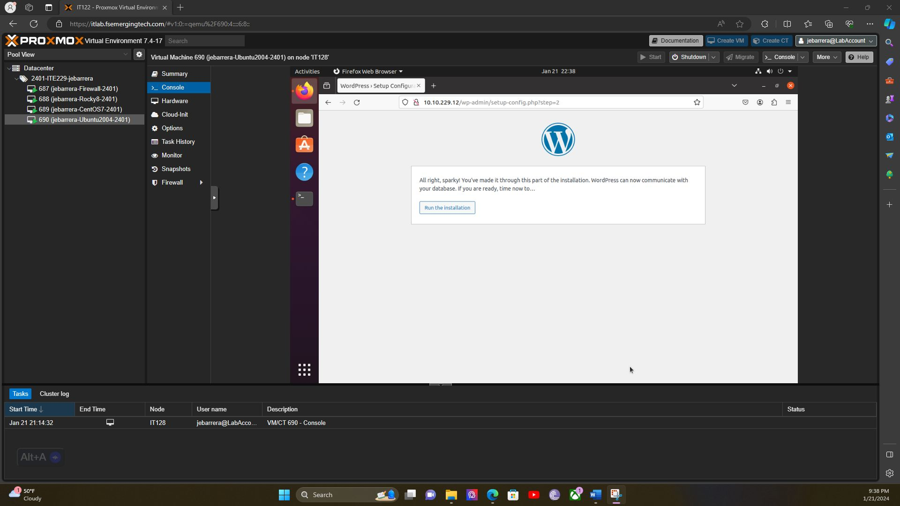
What you're looking at: a real web browser, loaded to the WordPress installer page, displaying the message "You've made it through this part of the installation. WordPress can now communicate with your database." This confirms the website is genuinely live and functioning, not just files sitting unused on a disk.Step 3
Loaded the finished website in a browser to confirm it was serving real content, not just responding to the installer.
The setup wizard proves WordPress can reach its database — it doesn't prove the actual website works for a visitor. This is the follow-through: opening the site's homepage and seeing WordPress's default sample post rendered for real, the same way a client or end user would experience it.
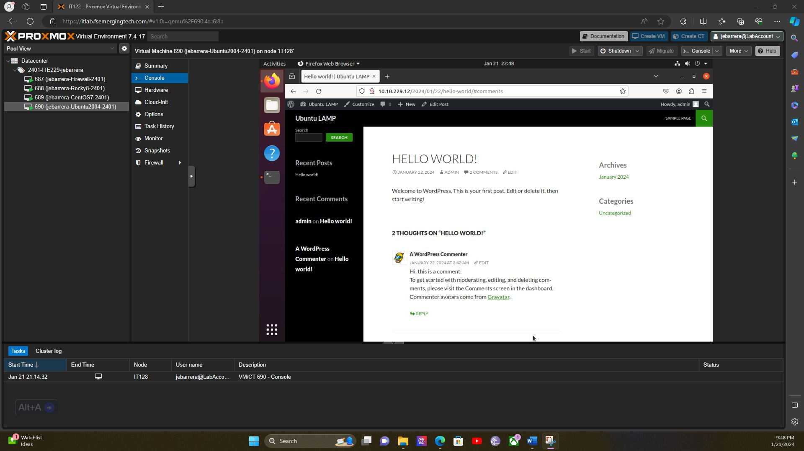
What you're looking at: the WordPress site's actual public homepage, showing the default "Hello world!" post and a sample comment underneath it. This is the site as any visitor would see it — confirmation that the install didn't just finish, it's genuinely serving pages.Step 4
Locked down who is allowed to change WordPress's own files, using Linux file permissions.
Every file on a Linux server has an "owner" and a set of rules for who can read, write, or run it. Setting the right owner (here, a limited system account called www-data — the account the web server itself runs as) means that even if someone else gets access to the server, they still can't casually edit WordPress's core files.
What you're looking at: a permissions check on WordPress's three most important folders (wp-admin, wp-content, wp-includes). Each line confirms the owner is www-data — the restricted account the web server runs as, not a full administrator account — which limits the damage possible if that account were ever compromised.Step 5
Added an extra layer of protection specifically around WordPress's most sensitive file, wp-config.php.
wp-config.php stores the website's database password and secret security keys — if an attacker ever read that file, they could take over the entire site. A configuration file called .htaccess can add a server-level rule that blocks any direct request for that file from the outside, on top of the normal file permissions from Step 3.
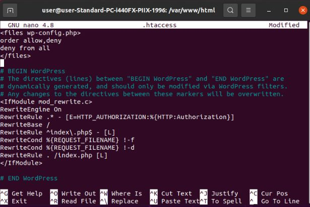
What you're looking at: the .htaccess file being edited in a text editor. The top rule, <Files wp-config.php> ... deny from all </Files>, tells the web server to refuse any visitor who tries to load that file directly in a browser — closing off one of the most damaging things an attacker could try.Step 6
Tested the lockdown by trying to write to WordPress's files as a different, non-admin user — and confirmed it was blocked.
Setting permissions is one thing; proving they actually work is another. Here, a second, ordinary user account (testuser) tried to create or edit files inside WordPress's folders — the same thing malicious code would try to do if it ever got a foothold on the server.
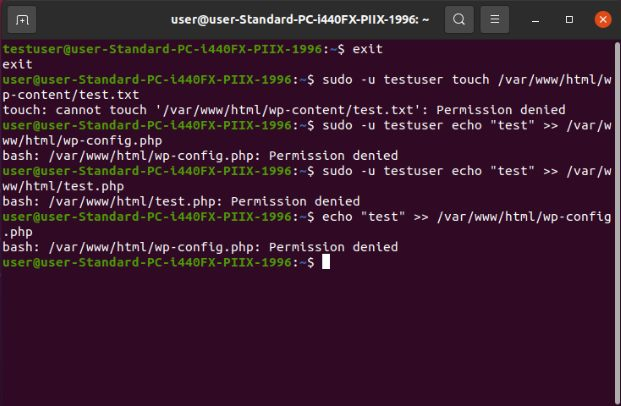
What you're looking at: a terminal running several write attempts as testuser — trying to create a file in wp-content, and trying to edit wp-config.php. Every single attempt returns "Permission denied." This is direct proof the hardening from Steps 4 and 5 actually works, not just that it was configured.Step 7
Installed a dedicated WordPress security plugin (Wordfence) to add a third layer of defense on top of file permissions and the .htaccess rule.
File permissions and a locked-down config file protect the server's files, but they don't watch incoming web traffic. Wordfence adds a firewall built specifically for WordPress — it can block known attack patterns, scan installed files for malware, and enforce login protections, covering the layer that plain file permissions can't reach. This is defense-in-depth: no single control is assumed to be enough on its own.
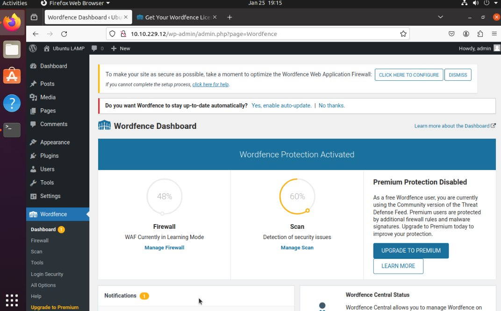
What you're looking at: the Wordfence dashboard inside the WordPress admin area, confirming "Wordfence Protection Activated" with the firewall and malware scanner both running. This is the network-facing layer of defense, sitting alongside the file-level hardening from Steps 5 and 6.
Part C — Samba file server
What is Samba? It's software that lets a Linux computer share folders the same way Windows computers natively do — so a mixed office of Windows and Linux/Mac machines can all access the same shared drive. This is the exact fix behind the classic "I can't access the shared drive" help desk ticket.
Step 1
Installed Samba on a Linux server, turning it into a file server Windows computers can connect to.
Without Samba, a Linux computer can't be "seen" by Windows the normal way Windows expects (through a system called SMB). Installing it is what makes cross-platform file sharing possible at all.
What you're looking at: a Linux command line running sudo apt-get install samba — the command that downloads and installs Samba along with everything it depends on. The scrolling text lists all the smaller components being installed alongside it.Step 2
Created a specific shared folder and set exactly who is allowed to access it.
Samba's behavior is controlled by one settings file (smb.conf). Rather than sharing every folder on the server with everyone, this defines one named share with a specific list of approved users — the same "least privilege" principle used in Active Directory: only give access to the people who actually need it.
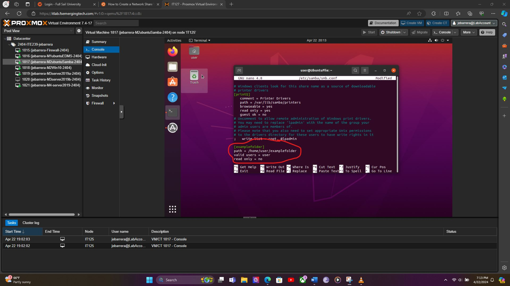
What you're looking at: the Samba settings file open in a text editor, with a custom share block (circled) named [examplefolder]. It points to a specific folder path and includes the line valid users = user — meaning only that one approved account can connect to this particular share, not just anyone on the network.Step 3
Proved the share actually worked cross-platform: connected from a Windows computer, edited a file, and confirmed the change appeared back on the Linux server.
A share that's configured but never tested is just a guess. From a Windows 10 machine, browsing to \\<server-ip>\Milestone2 opened the shared folder like any normal Windows network drive. Editing a text file there and then reopening that same file directly on the Linux server — seeing the exact same edit — is the real proof that Windows and Linux are reading and writing to the identical file, not two separate copies.
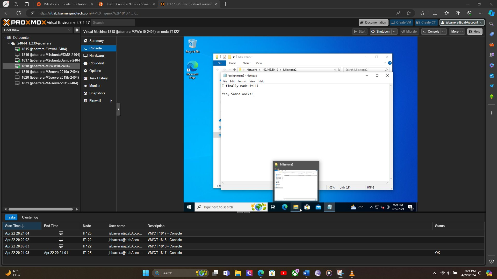
What you're looking at: a Windows 10 desktop with the Samba share open as a normal network folder, and a text file open in Notepad with the line "Yes, Samba works!" just added and saved — written from the Windows side, over the network, straight into a file that physically lives on the Linux server.
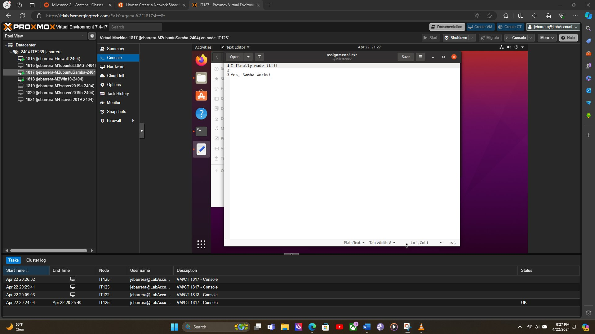
What you're looking at: the same file, opened directly on the Linux server itself — no network share involved this time. The line "Yes, Samba works!" is right there, confirming the edit made from Windows a moment ago landed on the real file, not a disconnected copy.
Part D — Mayan EDMS (document management)
What is Mayan EDMS? It's a system for storing, organizing, and searching scanned documents and files — the digital version of a filing cabinet, built for businesses that need to track paperwork like contracts or invoices.
Step 1
Deployed the entire document-management system in one step using Docker.
Mayan EDMS actually needs several separate pieces working together — the main app, a database, a cache, and a message queue. Docker packages each piece into its own isolated "container" so they don't interfere with each other, and one command can start all of them together correctly configured.
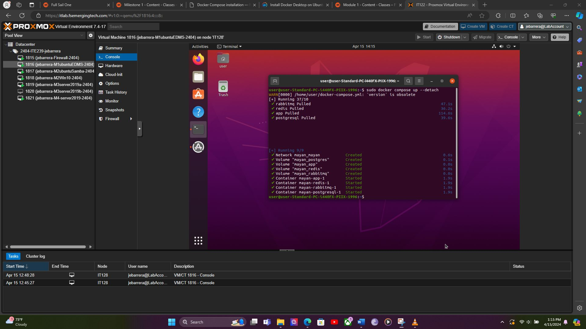
What you're looking at: the output of docker compose up — each line confirms a separate piece of Mayan starting successfully: the main app, plus its database (postgresql), cache (redis), and task queue (rabbitmq). All four containers report "Started," meaning the full document-management system is now running.Step 2
Logged into the finished Mayan EDMS web application to confirm it was actually usable, not just running in the background.
Containers reporting "Started" only means the processes launched — it doesn't confirm the app is reachable or that anyone could actually log in and use it. Opening the web interface and signing in with the auto-generated admin account is the step that proves the document management system is genuinely ready for someone to start uploading and organizing files.
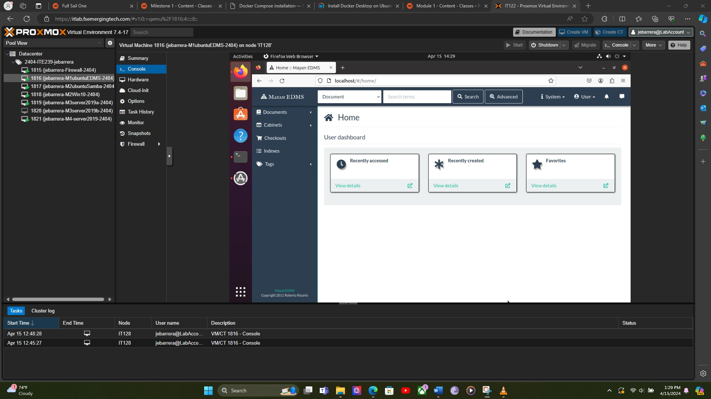
What you're looking at: the Mayan EDMS home dashboard after a successful admin login, showing the "Recently accessed," "Recently created," and "Favorites" panels alongside the Documents, Cabinets, and Tags navigation. This is the working application a real user would see — the payoff of the Docker deployment in Step 1.
Part E — Windows Server load balancing (NLB)
What is load balancing? It's spreading incoming traffic across two or more servers instead of relying on just one — so if one server gets overloaded or fails, the other keeps things running. NLB (Network Load Balancing) is Microsoft's built-in way to do this on Windows Server.
Step 1
Prepared a Windows Server 2019 machine to be cloned into an identical second server, using a tool called Sysprep.
You can't just copy a running Windows server and turn on two at once — they'd conflict over shared internal IDs. Sysprep resets those unique identifiers so the copy can safely become its own independent computer, which is how the second load-balancing node gets created.
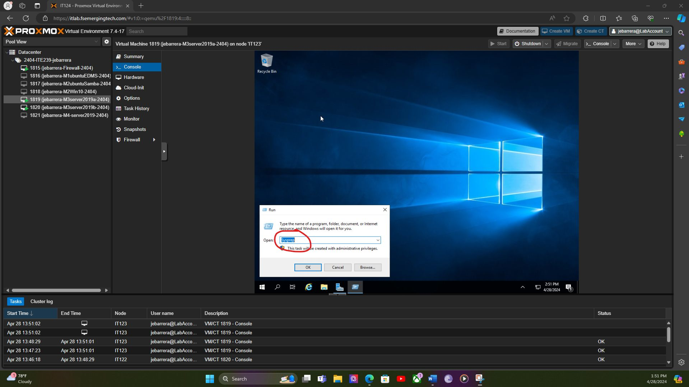
What you're looking at: the Windows "Run" box with Sysprep typed in and circled — this launches the tool that generalizes the server so it can be cloned into a second, independent machine for the load-balancing pair.Step 2
Gave the first server a fixed, permanent network address instead of a temporary one.
Most home devices get a temporary, auto-assigned address that can change over time (DHCP). Servers need a permanent, unchanging address (a "static IP") so other computers — and the load balancer itself — always know exactly where to find them.
What you're looking at: the Windows network settings for a server named NLB-server1, with a fixed address (192.168.50.115) and matching gateway/DNS settings manually entered — the permanent contact information this server will always use.Step 3
Created the actual load-balancing cluster and gave it its own shared address that customers or employees would connect to.
This is the core of load balancing: instead of people connecting directly to NLB-server1 or NLB-server2, everyone connects to one shared "cluster" address, and Windows automatically routes each request to whichever server is healthy and available.
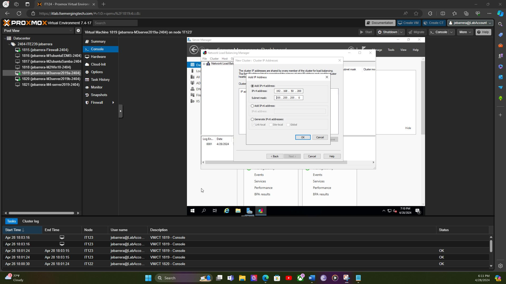
What you're looking at: the Network Load Balancing Manager, mid-way through the "New Cluster" wizard, adding the shared cluster address 192.168.50.200. This is the single address the outside world will use — behind the scenes, it's actually two servers sharing the load.Step 4
Added the second server to the cluster, completing the two-node load-balanced pair.
A load-balancing cluster with only one server isn't providing any redundancy — this step connects the second, previously-prepared server (from Step 1) into the same cluster, so traffic can now be shared between both, and either one can fail without taking the whole service down.
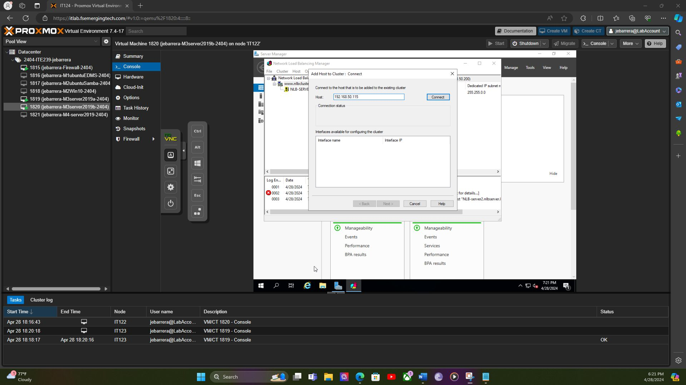
What you're looking at: the "Add Host to Cluster" dialog, connecting to the second server at 192.168.50.115 to join it to the cluster created in Step 3. Once this finishes, the load-balancing pair is fully operational.
Part F — Windows Server administration with PowerShell
Why PowerShell? Every task in Part E above was done by clicking through Windows menus — that works, but it doesn't scale and it's easy to forget a step. PowerShell does the same administrative work from the command line, which means it can be scripted, repeated exactly, and run against many servers at once instead of one click at a time.
Step 1
Renamed a Windows Server 2019 machine using a single PowerShell command instead of the Server Manager GUI.
Renaming a server through the GUI takes several menus and clicks. The Rename-Computer cmdlet does the identical thing in one line, which is what makes PowerShell useful for setup scripts that configure a whole fleet of servers identically instead of repeating GUI clicks by hand on each one.
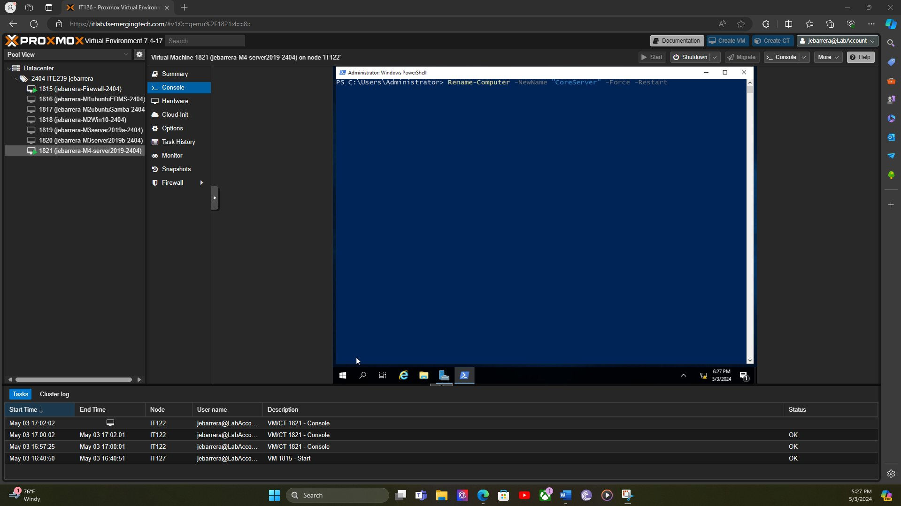
What you're looking at: a Windows PowerShell window running Rename-Computer -NewName "CoreServer" -Force -Restart — renaming the server and immediately restarting to apply the change, all from one command.Step 2
Removed an installed server role (the Web Server / IIS role) using a PowerShell cmdlet instead of the Remove Roles wizard.
Adding and removing server roles is normally a multi-screen wizard in Server Manager, the same tool used to install IIS on the NLB nodes in Part E. Uninstall-WindowsFeature does the same removal in one command, which is exactly the kind of task that gets automated in a real script instead of repeated by hand on every server.
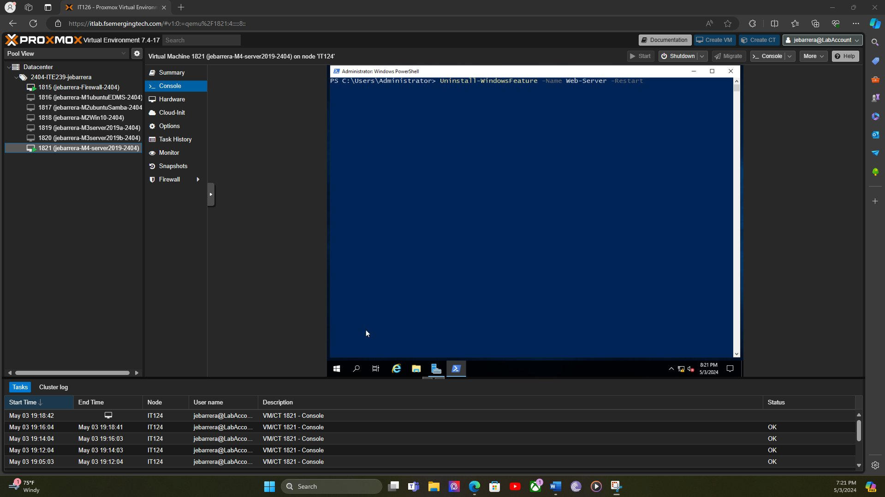
What you're looking at: PowerShell running Uninstall-WindowsFeature -Name Web-Server -Restart — removing the Web Server (IIS) role and restarting the server in the same command, no GUI wizard required.
Where these labs came from
Full Sail University — Project and Portfolio II (Nginx, WordPress) and Project and Portfolio III (Samba, Mayan EDMS, Windows NLB, PowerShell). These are private coursework files with instructor notes and aren't published publicly; the screenshots above are the actual proof-of-work images submitted for grading.